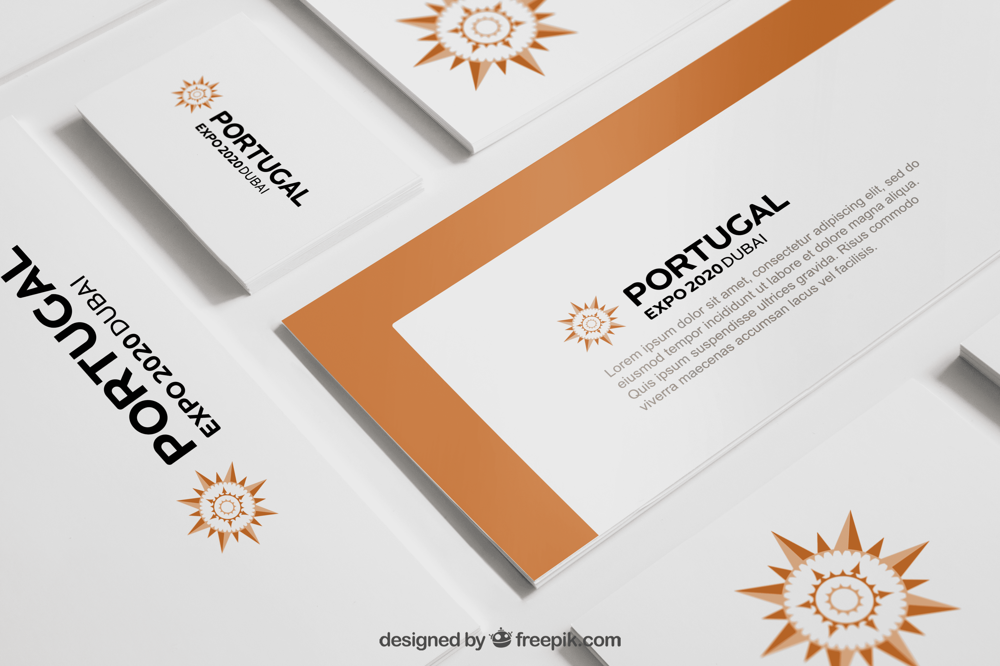
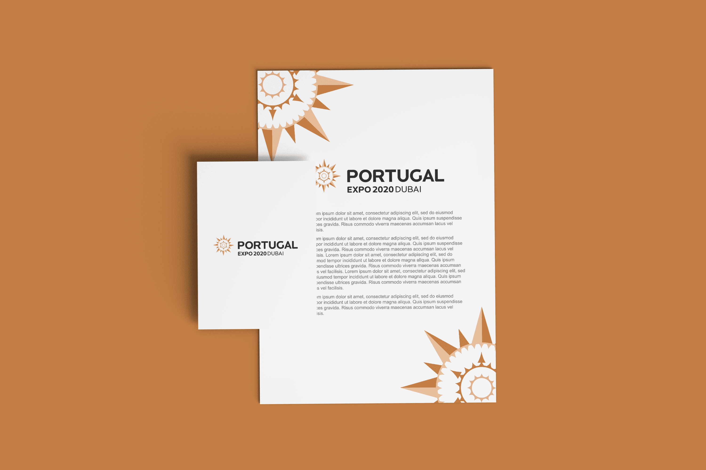
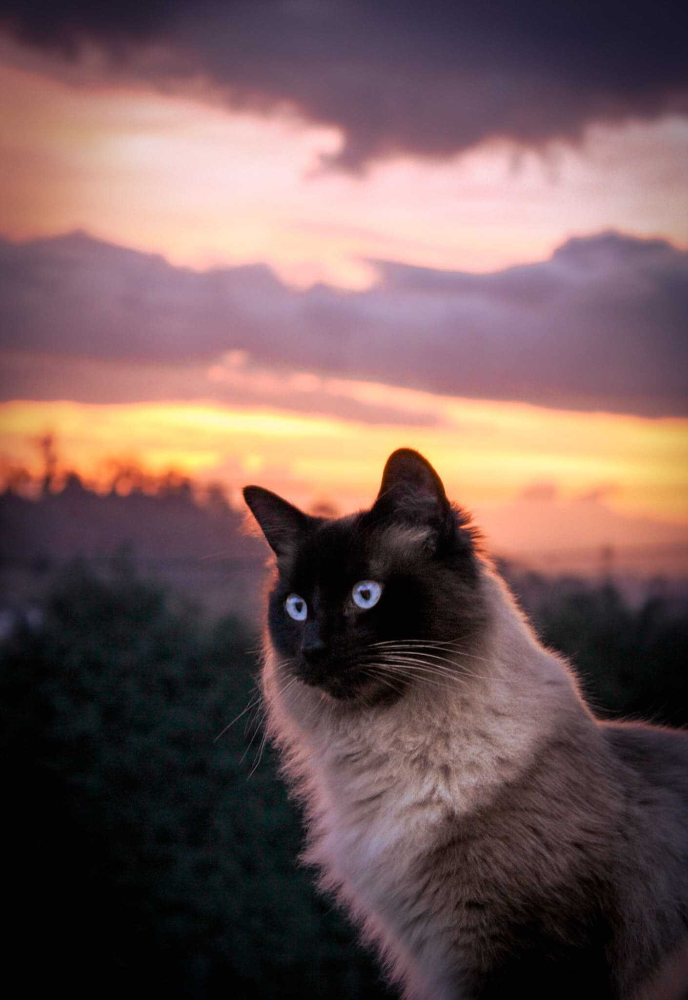
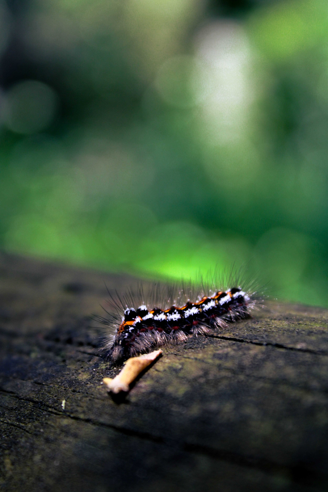
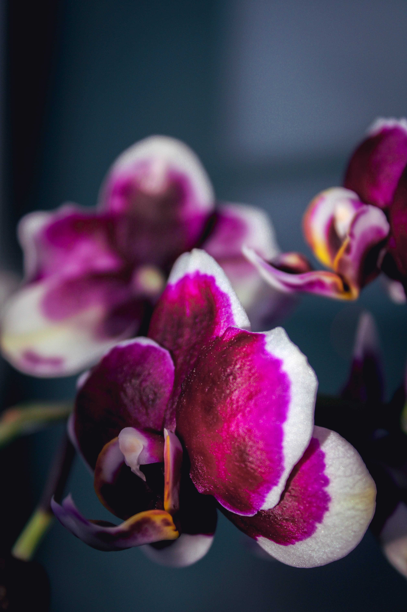
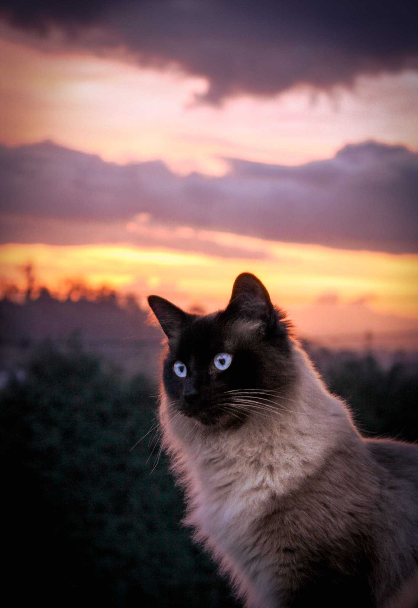
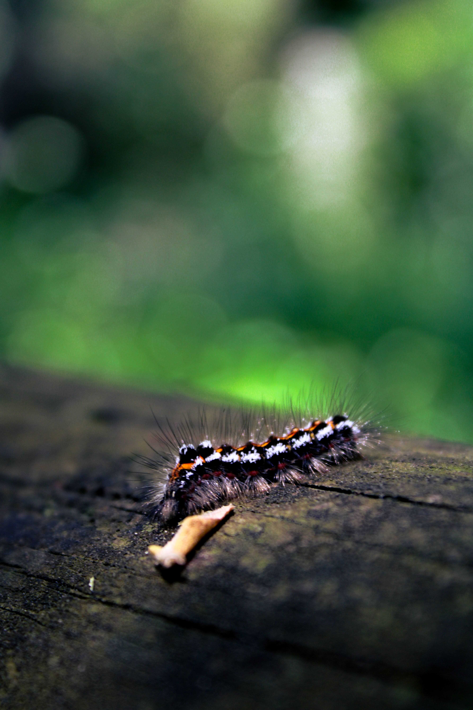
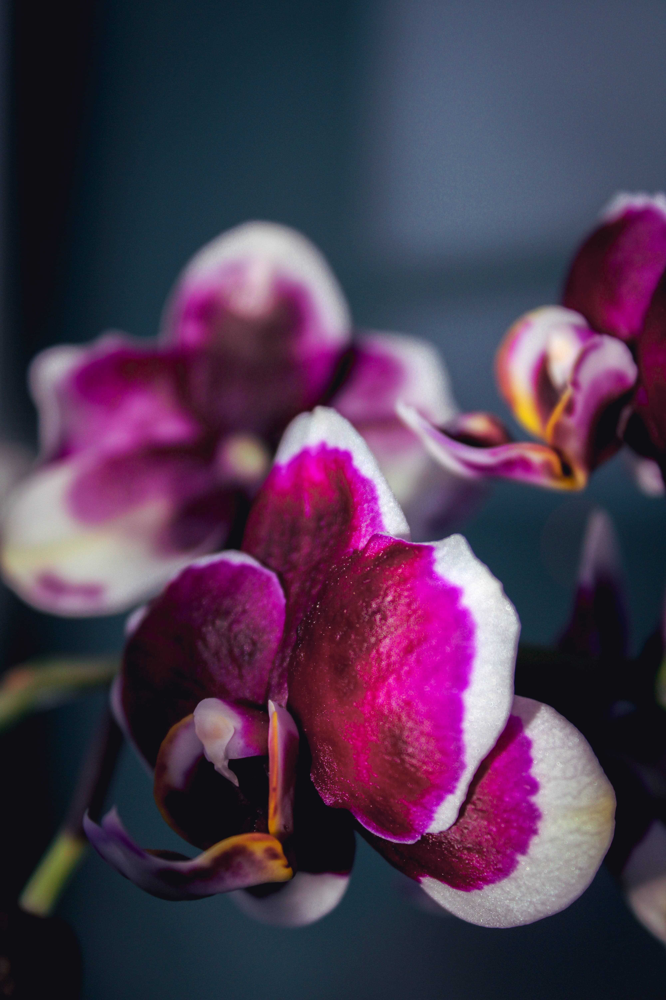

A cadeira foi realizada na disciplina de projeto, na Universidade de Aveiro, em que, o foco principal era avaliar a capacidade do aluno na sua versatilidade e conhecimento em design de produto. Com isso, produzi um produto que correspondesse à ergonomia e simultaneamente permitisse ser um contentor para guardar algo. Deste modo, reproduzi uma cadeira de lazer que ao mesmo tempo guardasse mantas, livros, ou outros objetos. Portanto, desenhei uma cadeira confortável juntamente de uma caixa simples integrada na cadeira.


Este trabalho foi desenvolvido no âmbito de um concurso nacional, do qual, o principal objetivo era representar um símbolo que definisse Portugal para a Exposição no Dubai em 2021. Como tal, elaborei um desenho simples e que lembrasse o nosso passado glorioso, em que o tema principal revelasse a época dos descobrimentos. Assim, trabalhei num símbolo que caracterizasse esses tempos, por isso, foquei-me na bússola. Este elemento contém tonalidades da época e ao mesmo tempo simboliza tradição devido aos pormenores elaborados.
 Fotografia é uma área que tenho bastante interesse, logo, nos meus tempos livres embarco em grandes aventuras, e fotografo principalmente a natureza, um sítio que me deixa totalmente relaxada. Nesta área, o meu gosto é essencialmente os detalhes, os pormenores, as cores e os movimentos.
 





“Animal Pain” consiste num projeto de desenvolvimento pessoal, que está representado através de um vídeo e a capa de um álbum. Como tal, apresentei a minha perspetiva e evolução no tema do vegetarianismo. O objetivo é causar no observador arrepios, desconforto, ânsia e dor, para que este, reflita e sinta na pele o que os animais suportam por nós. O vídeo demonstra um cenário minimalista, onde se encontra uma rapariga que irá abordar o sofrimento que o animal vive dentro dele, ao mesmo tempo contrastando com outro vídeo que apresenta um clima denso e pesado que demonstra a morte dolorosa dos animais. O porco foi o animal escolhido para generalizar o sofrimento de todos os animais. Neste contexto a música escolhida é dos Imagion Dragon - “Radioactive” Instrumental juntamente de outros sons fortes e arrepiantes causados no matadouro.